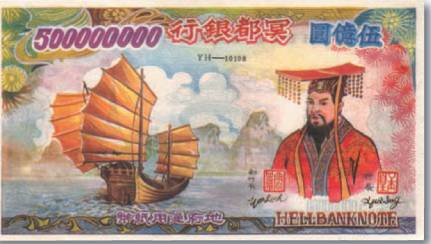
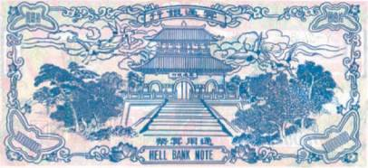

Тайны бумажных денег : Магия денег

Магия денег — это не просто слова. В этом выражении скрыт глубокий смысл. Ведь деньги — неотъемлемая часть человеческого бытия на протяжении вот уже более 2,5 тыс. лет. Поэтому не приходится удивляться, что с деньгами связано много загадочного и мистического. Они как бы аккумулируют в себе время. Накапливают информацию и энергию (к сожалению, не всегда положительную). С древнейших времен человек верил в таинственную связь между событиями и явлениями, происходящими вокруг него, и деньгами.
В Средние века считалось, что монета, к которой прикасалась рука святого человека, исцеляет любую болезнь. А европейские монархи из серебряных монет с изображением ангела мастерили себе амулеты, которые потом, не снимая, носили всю жизнь в надежде избежать злого рока.
Деньги являлись неотъемлемым атрибутом и в сношениях с потусторонним миром. Древние греки, к примеру, считали, что пропуск в загробный мир не может быть бесплатным. Своим умершим они клали в рот мелкие серебряные монеты. И свято верили, что этой платы будет достаточно, чтобы душа несчастного была перевезена мрачным паромщиком Хароном через Стикс — реку мертвых. Нечто подобное наблюдается и в некоторых обрядах современности. Например, китайцы, прощаясь со своими умершими, сжигают специально предназначенные для этого ритуала купюры, так называемые деньги мертвых. Они должны способствовать безбедному существованию души в ином мире. С середины XX в. качество этих «денег» немногим уступает настоящим, а по художественному оформлению нередко и превосходит находящиеся в обращении официальные бумажные ассигнации. И в этом нет ничего удивительного. На «пополнение счетов» в банках загробного мира работает целая индустрия. Часто лицевую сторону таких бумажных денег украшает изображение повелителя царства тьмы (рис. 1), в то время как на оборотной стороне можно видеть его богатый дворец (рис. 2). Кстати, шагая в ногу со временем, китайцы для своих покойников уже даже начали выпускать чековые книжки и пластиковые карточки (см. ниже).


Во времена Римской империи при строительстве кораблей в основание мачты тоже клали монеты. Делалось это неспроста. Своеобразная взятка могущественным богам Олимпа должна была гарантировать судну безопасность на морских просторах. А рыбаки Средиземноморья еще в XIX в. прикрепляли к своим сетям мелкие монеты, пытаясь таким образом смилостивить Нептуна и надеясь на богатый улов.
Бумажные денежные знаки или, как их еще принято называть, банкноты — это не только мелкие и крупные номиналы, указания принадлежности к тому или иному государству, подписи ответственных лиц, номера, водяные знаки, специальная бумага и изысканные средства защиты от подделки, но и порой удивительные изображения — мастерская работа настоящих профессионалов своего дела — художников и граверов. Именно они вдыхают жизнь в обыкновенные полоски бумаги, превращая их из платежного средства в один из излюбленных объектов коллекционирования.
Что же здесь изображено? Почему именно этот человек, именно это строение? Вершина какой горы имела честь быть увековеченной на этой купюре? А это что за странное животное? Подобными вопросами мы задаемся каждый раз, когда в наших руках оказывается доселе невиданный нами денежный знак. Приобретаем ли мы билеты в авиакассах Ташкента или расплачиваемся потрепанными бонами в Акапулько, даем ли чаевые в маленьких ресторанчиках на ночном базаре в Бангкоке, платим ли за проезд под Ла-Маншем, — такое происходит сплошь и рядом. Но достаточно уделить созерцанию банкноты чуть больше времени и внимания, поднести ее поближе к глазам и прислушаться к ее шепоту и, несмотря на различия в языке, культуре, религии, истории и даже менталитете страны, выпустившей ее в обращение, начинаем понимать, о чем она говорит. Так давайте же прислушаемся вместе! Заглянем в святая святых отдельных представителей мира бумажных денег и узнаем, какие тайны закодированы в удивительных банкнотных изображениях.